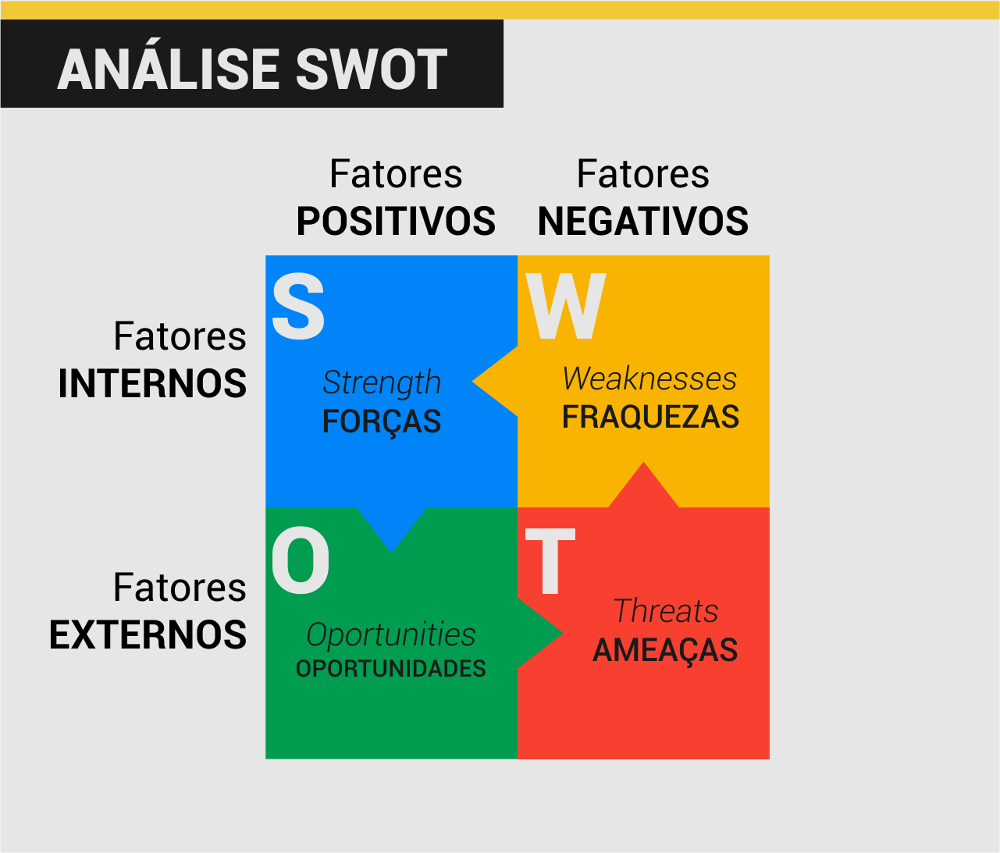

Bem vindx à primeira aula do curso de Auxiliar Administrativo!
Antes de iniciar o conteúdo propriamente dito, dê uma olhada na ementa para ficar por dentro dos requisitos, regras e outros detalhes do curso.
Se desejar, você poderá realizar o download deste ou qualquer outro conteúdo do site pressionando o botão Imprimir esta página em PDF localizado no rodapé da página.
Sugiro, para estudos complementares deste curso o material descrito nas referências bibliográficas, em especial:
BACARJI, A. G. Formação Inicial e Continuada: Auxiliar Administrativo
Sem mais delongas, allons-y!
Sumário da Aula
- O que é ser Auxiliar Administrativo
- O mercado de Auxiliar Administrativo
- Exercício Prático - Conhece-te a ti mesmo
- Eficiência, Eficácia e Efetividade
- Vendendo Ideias!
- Resumo
- Exercícios
- Referências Bibliográficas
O que é ser Auxiliar Administrativo?
Toda empresa e organização existente demanda, além de profissionais técnicos, uma equipe responsável por sua administração.
Pense em uma padaria, por exemplo: para tudo funcionar perfeitamente são necessários padeiros, confeiteiros e cozinheiros. Estas tarefas demandam experiência e habilidades técnicas.
Por outro lado, para produzirem os bolos e pães da padaria, a equipe técnica necessita de matéria prima (farinha, leite, ovos, açúcar, sal…); além disso são necessários vendedores para atenderem os clientes e venderem os produtos; e uma equipe especial, responsáveis por planejar promoções, entrar em contato com fornecedores, organizar o caixa da empresa, pagar os funcionários e realizar outras tarefas “burocráticas”.
É neste contexto de organizar e planejar uma organização que surge a Administração.
“A administração é o processo de consecução dos objetivos organizacionais de uma maneira eficiente, eficaz e efetiva, por meio do planejamento, da organização, da liderança e do controle dos recursos organizacionais”.(CARAVANTES, 2005)
O auxiliar administrativo surge neste contexto como um profissional multitarefas, pois sua rotina abrange diferentes tarefas e dificilmente será monótona,pois ele sempre estará mudando de atividades e auxiliando diferentes setores da empresa.
O auxiliar administrativo irá, acima de tudo, dar apoio à administração de uma empresa em suas tarefas diárias, realizando tarefas diversas e em diferentes setores, como, por exemplo: compras, pessoal, logística, estoque, financeiro, marketing, etc.
Apesar da versatilidade do cargo, há atividades específicas que o auxiliar pode e não pode realizar.
O Auxiliar Administrativo pode:
- Estruturar e organizar arquivos e documentos;
- Redigir e digitar documentos e comunicados;
- Atender e encaminhar o público/clientes;
- Preencher formulários, planilhas e outros documentos;
- Receber fornecedores e materiais;
- Elaborar agendas;
- Entrar em contato com fornecedores e clientes;
- Auxiliar no treinamento de funcionários do mesmo setor;
O Auxiliar Administrativo não pode:
- Contratar ou demitir funcionários da empresa;
- Realizar ou redigir contratos com fornecedores ou clientes;
- Realizar acertos ou acordos entre clientes ou fornecedores;
- Controlar as entradas e saídas da empresa;
- Definir metas e objetivos da empresa;
O mercado de Auxiliar Administrativo
De acordo com dados da CATHO, empresa de classificados online de currículos e vagas, 57% dos auxiliares administrativos possuem graduação e 12% têm Inglês Intermediário (CATHO, 2020).
Pelo fato de ser uma profissão tão ampla, a especialização é essencial para esta área! Saber utilizar o Pacote Office, se comunicar bem e demonstrar força de vontade e prontidão são competências importantes para se tornar um bom Auxiliar Administrativo.
Em março de 2020 a média salarial do profissional no país era de R$ 1.361,05, sendo principalmente empregados nos ramos:

Com o tempo, o Auxiliar Administrativo pode trilhar diferentes caminhos, incluindo as áreas Financeira, Contábil e de Gerência.

Exercício Prático - Conhece-te a ti mesmo
A Análise SWOT, também conhecida como Matriz FOFA é uma estratégia utilizada para identificar os pontos fortes e fracos de uma pessoa, situação, ideia ou empresa.
Esta análise é composta por 4 diferentes fatores (ou quadrantes):

Cada fator deve ser detalhadamente analisado a fim de se compreender a dinâmica geral da pessoa ou empresa.
S (strengths ou forças)
Neste quadrante deve-se listar todas os pontos positivos, forças, vantagens internas e diferenciais da empresa, pessoa, ideia ou situação em relação a seus concorrentes.
W (weaknesses ou fraquezas)
Aqui temos o oposto. Neste quadrante precisamos levantar quais as principais desvantagens internas (da empresa ou pessoa) em relação aos concorrentes. De forma bem sincera e honesta, é preciso saber quais são as fraquezas, defeitos, vícios e pontos negativos que prejudicam de alguma forma o negócio ou a própria pessoa.
O (opportunities ou oportunidades)
São as forças externas que influenciam positivamente o negócio, os aspectos com potencial de fazer crescer a vantagem competitiva da empresa. Por serem fatores externos, não temos como influenciar estes aspectos, porém é extremamente importante conhecer cada um deles para que sua empresa possa se preparar para aproveitar estas oportunidades. (PAULA, 2015).
T (threats ou ameaças)
Por fim temos os aspectos negativos e com potencial de comprometer a vantagem competitiva da empresa, ou seja, o oposto das oportunidades. As ameaças devem ser tratadas com bastante cautela, pois podem prejudicar não apenas o planejamento estratégico da empresa, mas também os resultados. (PAULA, 2015).
Exemplos de Análise SWOT


Eficiência, Eficácia e Efetividade
Peter Drucker, considerado o Pai da Administração Moderna, disse certa vez: “Eficiência é fazer certo as coisas. Eficácia é fazer as coisas certas“.
Eficiência e eficácia são palavras semelhantes e, muitas vezes, consideradas sinônimas. No entanto, existem diferenças sutis na definição e utilização de ambos os termos.
Eficiência consiste em realizar uma tarefa da melhor maneira possível, com menos desperdício ou em menor tempo.
Eficácia consiste em atingir o objetivo ou metas de uma tarefa.
Efetividade consiste em ser, ao mesmo tempo, eficiente e eficaz.

Vendendo Ideias!
Joseph Schumpeter afirma que para sobreviverem e se desenvolverem, as empresas do mundo capitalista precisam inovar! Este impulso de mudança recebe o nome de destruição criativa.
O conceito de Schumpeter está relacionado às novas ideias que são diariamente apresentadas no mercado. Estas ideias precisam ser, acima de tudo, viáveis e condizentes com a situação presente da empresa.
As empresas apresentam uma série de problemas que precisam ser resolvidos. Demonstrar interesse pelos assuntos da empresa ou para melhorar um produto ou serviço é fundamental para garantir a competitividade!
Toda ideia apresenta, por si só, pontos fortes e fracos. Não apresente uma ideia pela metade esclareça porque ela é boa para sua empresa e demostre como ela pode funcionar, antecipando sempre possíveis objeções.
- Toda ideia possui prós e contras;
- Analisar a sua viabilidade consiste em relacionar estes pontos positivos e negativos, buscando sempre solucionar todas possíveis objeções;
- Há sempre um momento certo para apresentar suas ideias: o melhor momento é quando um projeto necessita ser planejado ou um problema foi detectado.
Se você tem uma ideia inovadora, precisará se preparar para dialogar e negociar com os detentores do capital para transformá-la em sucesso. Por isso, não basta apenas ter uma grande ideia. Os desafios atuais vão muito além da destruição criativa! (DORNELAS, 2014)
Resumo
A função do auxiliar administrativo é dar apoio à administração de uma empresa em suas tarefas diárias, realizando tarefas diversas e em diferentes setores, como, por exemplo: compras, pessoal, logística, estoque, financeiro, marketing, etc.
57% dos auxiliares administrativos possuem graduação e 12% têm Inglês Intermediário (CATHO, 2020), o que significa que a especialização é essencial para esta área! Saber utilizar o Pacote Office, se comunicar bem e demonstrar força de vontade e prontidão são competências importantes para se tornar um bom Auxiliar Administrativo.
A Análise SWOT, também conhecida como Matriz FOFA é uma estratégia utilizada para identificar os pontos fortes e fracos de uma pessoa, situação, ideia ou empresa.
Eficiência e eficácia são palavras semelhantes, mas com significados diferentes:
Eficiênciaconsiste em utilizar bem os recursos eEficáciaconsiste em atingir o objetivo ou metas de uma tarefa.Toda ideia apresenta, por si só, pontos fortes e fracos. Há sempre um momento certo para apresentar suas ideias: o melhor momento é quando um projeto necessita ser planejado ou um problema foi detectado.
Exercícios
Levando em conta as habilidades e competências necessárias para ser um bom auxiliar administrativo, preencha uma Matriz FOFA com as suas características pessoais relacionadas ao cargo.
Gustavo e Gabriela são dois estudantes de um curso de Francês. Gabriela conseguiu, em um único dia, ler um livro indicado pelo professor. Gustavo, por outro lado, demorou 15 dias para terminar o mas livro, mas foi melhor que Gabriela na prova sobre o mesmo. Quem foi mais eficiente? E quem foi mais eficaz?
Maricleuza abriu uma empresa que produz produtos de beleza e higiene. No entanto, por ser nova no setor, sua empresa ainda não é muito conhecida no mercado.
Planeje uma ideia que ajuda a empresa de Maricleuza a se tornar reconhecida. Analise sua ideia, levando em consideração os prós e contras, e a viabilidade da mesma.
Referências Bibliográficas
BACARJI, Alencar Garcia. Formação Incial e Continuada Auxiliar Administrativo. Curitiba: Instituto Federal do Paraná, 2012.
CAMARGO, R. F. de. Tudo sobre Peter Drucker: conheça quem foi o Pai da Administração Moderna e autor de O Gestor Eficaz. TREASY, Joinville, 3 de mai. de 2017. Disponível em https://bit.ly/3aqBQHQ. Acesso em 27 de mar. de 2020.
CATHO. Guia de Profissões e Salários 2020 - Auxiliar Administrativo. Barueri, 2020. Disponível em https://bit.ly/2WM4rU5. Acesso em 27 de mar. de 2020.
CARAVANTES, G. R.P; KLOECKNER, C. M.; PANNO, C. Administração: teoria e processos. São Paulo: Pearson Prentice Hall, 2005.
DORNELAS, J. A destruição criativa e o empreendedorismo inovador contemporâneo. UOL, São Paulo, 20 de out. de 2014. Disponível em https://bit.ly/2QPupCq. Acesso em 27 de mar. de 2020.
PAULA, G. B. de. Matriz SWOT ou Matriz FOFA: utilizando a Análise SWOT para conhecer as cartas do jogo e aumentar as chances de vitória de sua empresa! TREASY, Joinville, 17 de ago. de 2015. Disponível em https://bit.ly/3aoYOz9. Acesso em 27 de mar. de 2020.